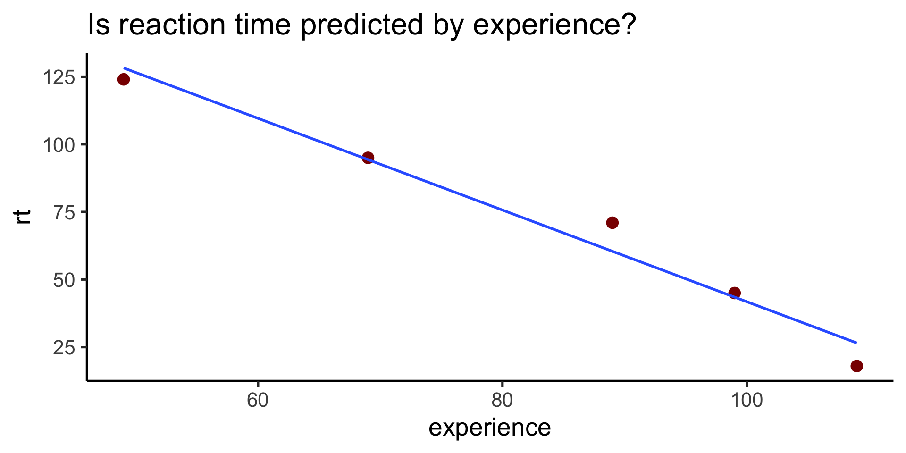
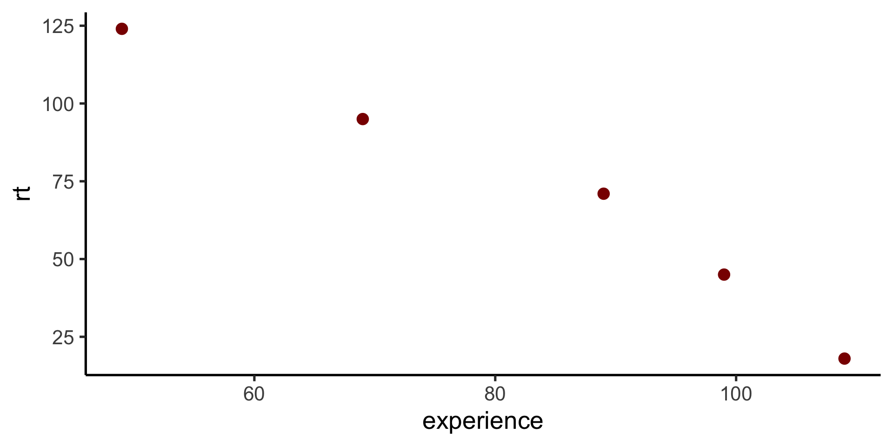
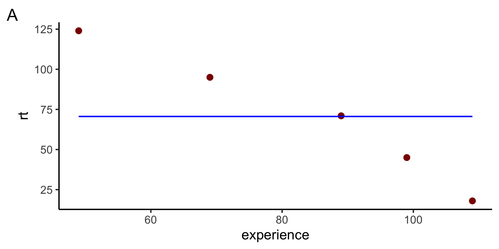
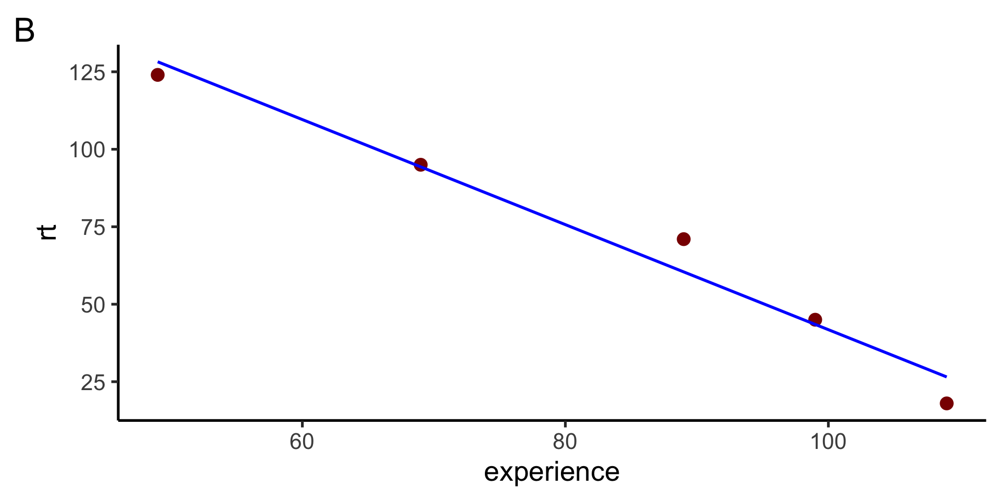
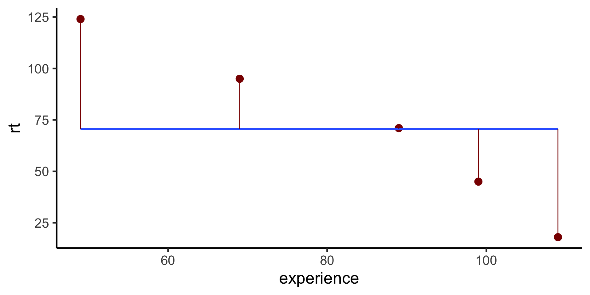
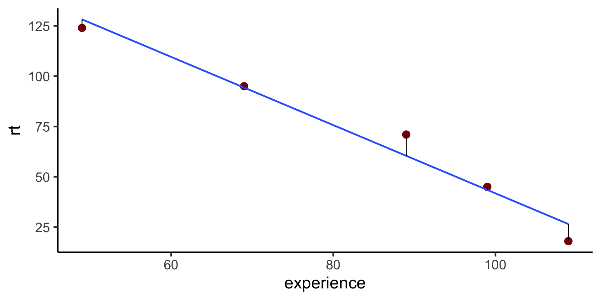
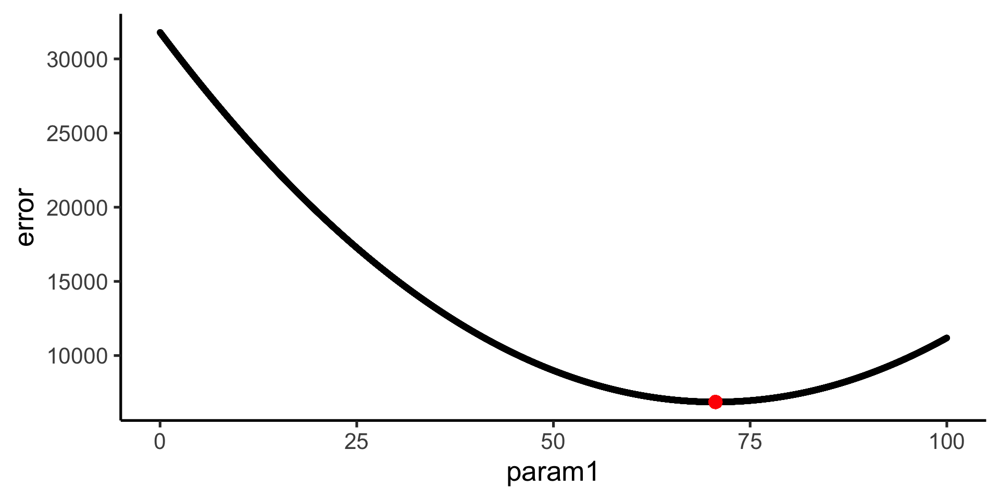
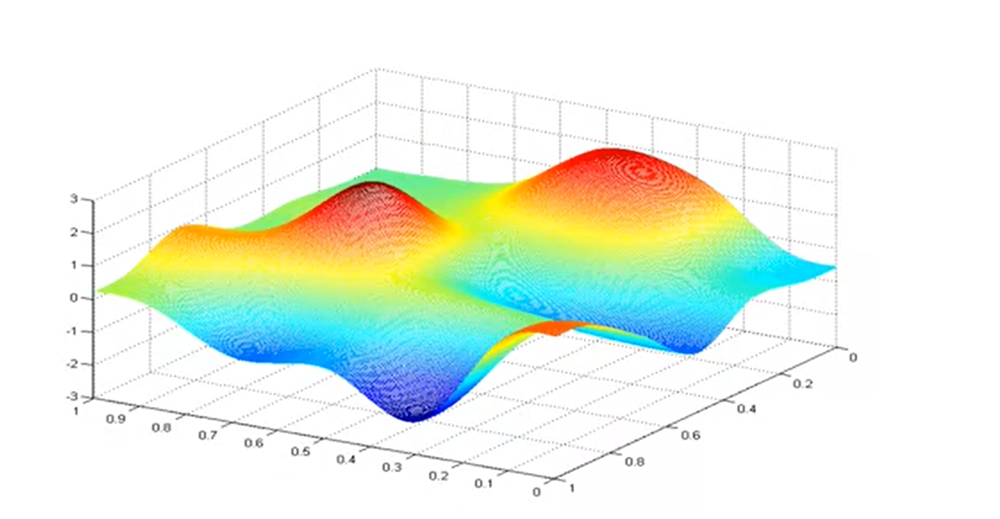
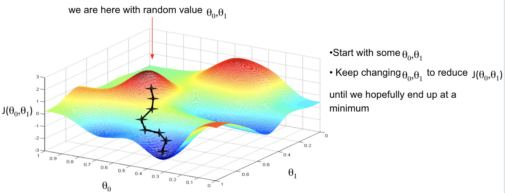

Model Fitting
Data Science for Studying Language and the Mind
Katie Schuler
2024-10-22
Announcements
- Final exam scheduled for December 19th at noon
- If you have a conflict, please let us know by November 1. We can proctor an earlier date.
You are here
Data science with R
- R basics
- Data visualization
- Data wrangling
Stats & Model building
- Sampling distribution
- Hypothesis testing
- Model specification
Model fitting- Model accuracy
- Model reliability
More advanced
- Classification
- Inference for regression
- Mixed-effect models
Roadmap
- Fitting linear models in R
- Goodness of fit: quantifying our intuition
- Search problem: How do we find the best one?
- Gradient descent - iterative optimization algorithm
- Ordinary least squares - analytical solution for linear regression
- If time: another full example
Fit a linear model
| model specification | |
|---|---|
| R syntax | rt ~ 1 + experience |
| R syntax | rt ~ experience |
| Equation | \(y=w_0+w_1x_1\) |
\(y = 211.271 + -1.695x\)
Fit a linear model in R

| model specification | |
|---|---|
| R syntax | rt ~ 1 + experience |
| R syntax | rt ~ experience |
| Equation | \(y=w_0+w_1x_1\) |
Fitting by intuition
How would you draw a “best fit” line?
- Draw a straight line that goes through as many points as possible.
Fitting by intuition
Which line fits best? How can you tell?


- B, because the model is closer to the data (closer to more of the points)
Quantifying “goodness” of fit
We can measure how close the model is to the data

- We call these the “errors” or “residuals”. We want a single number that would represent goodness of fit.
Sum of squared error
We can quantify our intutition and express goodness of fit with sum of squared error.

| experience | rt | prediction | error | squared_error |
|---|---|---|---|---|
| 49 | 124 | 128.22414 | 4.2241379 | 17.8433413 |
| 69 | 95 | 94.32759 | -0.6724138 | 0.4521403 |
| 89 | 71 | 60.43103 | -10.5689655 | 111.7030321 |
| 99 | 45 | 43.48276 | -1.5172414 | 2.3020214 |
| 109 | 18 | 26.53448 | 8.5344828 | 72.8373960 |
[1] 205.1379\(SSE=\sum_{i=i}^{n} (d_{i} - m_{i})^2 = 205.1379\)
Sum of squared error
\(SSE=\sum_{i=i}^{n} (d_{i} - m_{i})^2\)
Given some data:
| experience | rt | prediction | error | squared_error |
|---|---|---|---|---|
| 49 | 124 | 128.22414 | 4.2241379 | 17.8433413 |
| 69 | 95 | 94.32759 | -0.6724138 | 0.4521403 |
| 89 | 71 | 60.43103 | -10.5689655 | 111.7030321 |
| 99 | 45 | 43.48276 | -1.5172414 | 2.3020214 |
| 109 | 18 | 26.53448 | 8.5344828 | 72.8373960 |
Compute the sum of squared error:
Problem 1: check model parameters
- The
predict()way uses a fitted model, which already has the best fitting free parameters. - We need a way to check different potential model fits to see which one is best.
- Let’s write a function!
Now we can check any model parameters.
Problem 2: yikes
- That’s a lot of parameters to test! (
Inf?) - Also, how do we know when to stop?
Simplests possible case is hard
Check every para
Iterative optimization
Search problem
- We have a parameter space, a cost function, and our job is to search through the space to find the point that minimizes the cost function.
- Since we are using the cost function of squared error, we can think of our job as trying to find the minimum point on an error surface
Error surface
If there is only one parameter, the error surface of a function is a curvy line; if there are two parameters, it’s a bumpy sheet; etc.
Iterative optimization
To search through a parameter space, we can use local, iterative optimization.
- Start at some point in space (initial seed)
- look at the error surface in a small neighborhood around that point
- move in some directoion in an attempt to reduce the error (cost)
- and repeat until improvements are sufficiently small
Gradient descent
There are many iterative optimazation algorithms out there that vary in how they execute these steps. One simple example is gradient descent
Gradient descent
Gradient descent in R
Define our cost function (step 1):
Gradient descent in R
Impliment gradient descent algorithm with optimg (step 2):
Ordinary least squares solution
\(y = w_0 + w_1x_1\)
We have a system of equations:
- \(124 = w_01 + w_149\)
- \(95 = w_01 + w_169\)
- …
- \(18 = w_01 + w_1109\)
We can express them as a matrix: \(Y = Xw + \epsilon\)
And solve with linear algebra: \(w = (X^TX)^{-1}X^TY\)
Ordinary least squares solution in R
We need to construct X and Y (must be matrices):
(response_matrix <- data %>% select(rt) %>% as.matrix())
(explanatory_matrix <- data %>% mutate(int = 1) %>% select(int, experience) %>% as.matrix()) rt
[1,] 124
[2,] 95
[3,] 71
[4,] 45
[5,] 18 int experience
[1,] 1 49
[2,] 1 69
[3,] 1 89
[4,] 1 99
[5,] 1 109Then we can use our function to generate the OLS solution:
Call:
lm(formula = rt ~ experience, data = data)
Coefficients:
(Intercept) experience
211.271 -1.695